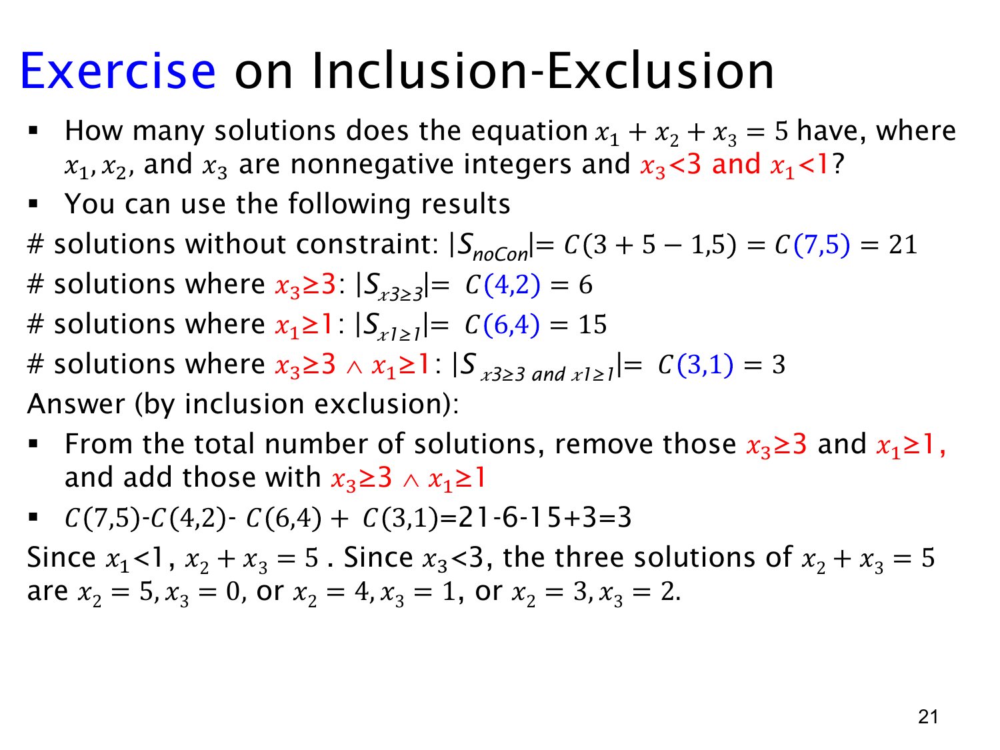

L1.8 · 第 20 页讲解原文
查看这一页课件

上界限制：减掉任何一个条件不合格的解
现在要求
x1+x2+x3=5,xi≥0,x3<3,x1<1.
变量都是整数，所以 x3 只能是 0、1、2，而 x1 只能是 0。
用容斥时，先把所有非负整数解作为全集 U，大小为
∣U∣=(27)=21.
定义两个坏集合：
A={x∈U:x3≥3},B={x∈U:x1≥1}.
满足题目要求的解既不能在 A，也不能在 B，因此是 U∖(A∪B)。
分别平移变量得到：
- 对 A，预留 x3 的 3，剩余总量为 2，所以 ∣A∣=(24)=6。
- 对 B，预留 x1 的 1，剩余总量为 4，所以 ∣B∣=(26)=15。
- 对 A∩B，同时预留 3+1，剩余总量为 1，所以 ∣A∩B∣=(23)=3。
于是答案为
∣U∣−∣A∣−∣B∣+∣A∩B∣=21−6−15+3=3.
之所以加回交集，是因为同时违反两个上界的解被减了两次；加回一次以后，它们在最终结果中的净贡献为 1−1−1+1=0，并没有被当作合法解保留下来。
这里也能直接枚举核对。由于 x1=0，只需令 x3=0,1,2，再用 x2=5−x3，得到
(0,5,0),(0,4,1),(0,3,2).
课件英文中的“remove those ... and ...”应按后面的公式理解为分别减去两个坏集合；实际要排除的是违反至少一个条件的并集，而不只是同时违反两个条件的交集。